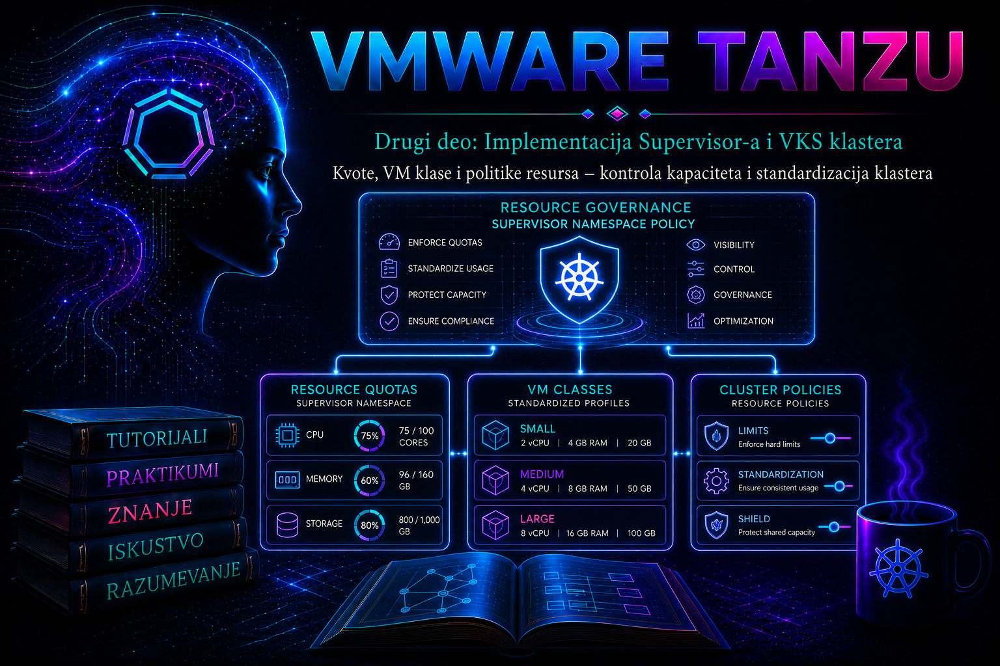

VMware & Tanzu

U prethodnim lekcijama Supervisor Namespace je postavljen kao granica odgovornosti, a identitet i RBAC kao odgovor na pitanje ko sme da radi sa platformom. Ova lekcija uvodi treći stub multi-tenancy modela: koliko resursa tim sme da potroši i koje infrastrukturne profile sme da izabere. Bez tog sloja pristup je formalno kontrolisan, ali kapacitet nije. Jedan pogrešno dimenzionisan VKS klaster, nekontrolisano umnožavanje virtuelnih mašina ili rast persistent volumena može ugroziti druge timove, produžiti vreme oporavka i prikriti stvarnu potrebu za proširenjem platforme.
U aktuelnoj Broadcom terminologiji proizvod se, zavisno od generacije dokumentacije i izdanja, pojavljuje kao vSphere with Tanzu, vSphere Supervisor ili deo VMware Cloud Foundation Automation, dok se servis za Kubernetes klastere u starijim izdanjima naziva TKG Service, a u novijim vSphere Kubernetes Service (VKS). Operativni princip ostaje isti: vSphere administrator namespace-u dodeljuje ograničenja, storage politike, VM klase i druge mogućnosti; platforma zatim kroz admission i kontrolere dozvoljava samo zahteve koji se uklapaju u taj odobreni skup. Nazivi ekrana, ugrađenih klasa, API grupa i pojedinih polja moraju se proveriti za konkretnu vCenter/Supervisor verziju.
Ciljevi lekcije
- razlikovati infrastrukturne limite vSphere Namespace-a od Kubernetes
ResourceQuotaiLimitRangeobjekata; - objasniti kako VM klase standardizuju CPU, memoriju, rezervacije i dozvoljene mogućnosti virtuelnih mašina;
- povezati VM klase i storage politike sa VKS control plane i worker čvorovima, VM Service workload-ima, dostupnošću i troškom;
- projektovati kapacitet sa rezervom za kvar, održavanje, rast i infrastrukturne servise, umesto prostog sabiranja deklarisanih kvota;
- konfigurisati i validirati namespace politike kroz vSphere Client i Kubernetes API, uz jasno razlikovanje read-only i state-changing postupaka;
- dijagnostikovati odbijene zahteve,
Pendingworkload-e, neuspešno kreiranje VKS klastera i storage incidente na osnovu događaja i statusa; - bezbedno menjati limite i klase, dokazati oporavak i dokumentovati odluku i rollback.
1. Model kontrole resursa: četiri povezana, ali različita sloja
Najčešća projektantska greška je da se svi mehanizmi nazovu „kvotom”. U praksi postoje najmanje četiri kontrole. Svaka odgovara na drugo pitanje i nijedna sama ne obezbeđuje potpunu izolaciju.
| Sloj | Objekat ili mehanizam | Šta kontroliše | Šta ne garantuje |
|---|---|---|---|
| Fizička infrastruktura | ESXi hostovi, vSphere klaster, HA/DRS, datastore, mreža | Stvarno raspoložive CPU, RAM, storage i mrežne resurse, placement i ponašanje pri kvaru | Pravednu raspodelu među tenantima bez dodatnih politika |
| Supervisor Namespace | namespace resource limits, storage-policy limits, dodeljene VM klase i sadržaj | Budžet i katalog infrastrukture koji namespace sme da koristi | Da je taj kapacitet fizički rezervisan ili trenutno slobodan |
| VM profil | VirtualMachineClass i politika klase |
Standardni hardverski oblik VM-a: CPU, memoriju, rezervacije i posebne mogućnosti | Ukupan broj VM-ova ili zbirnu potrošnju namespace-a |
| Workload Kubernetes klaster | ResourceQuota, LimitRange, requests/limits |
Zbirnu potrošnju i granice pojedinačnih Pod/PVC/API objekata u workload namespace-u | Kapacitet vSphere klastera niti veličinu VKS node VM-ova |
Kontrole se zato posmatraju kao lanac. VKS klaster može imati dovoljno Kubernetes kvote za nove Pod-ove, a da nema slobodnog prostora na worker čvorovima. Namespace može imati neiskorišćen storage limit, a da odgovarajući datastore ili politika nema fizički kapacitet. VM klasa može biti dozvoljena, ali novi čvor ne može da se postavi zbog HA admission control-a, maintenance operacije, nedovoljne memorije ili placement ograničenja. Poruka „quota available” nije dokaz da je workload moguće pokrenuti.
2. vSphere Namespace limiti i računovodstvo potrošnje
vSphere administrator u vSphere Client-u bira Supervisor Namespace i u delu Configure podešava raspoložive resurse. Tačan skup polja zavisi od Supervisor i vCenter verzije, mrežnog steka i aktiviranih servisa, ali tipično obuhvata CPU, memoriju, storage i ograničenja broja objekata. Za storage se mogu postaviti zasebni limiti po storage politici. Time se sprečava da namespace potroši ceo zajednički datastore ili da skupi storage sloj koristi bez kontrole.
Limit mora biti izveden iz planiranog broja VKS control plane i worker VM-ova, njihovih VM klasa, volumena, rezervi za rolling upgrade i očekivanog rasta. Račun mora uključiti i privremeno dupliranje čvorova tokom zamene ili nadogradnje. Ako je budžet dovoljan samo za stabilno stanje, upgrade može stati upravo kada je platformi najpotrebniji bezbedan višak kapaciteta.
planirani namespace budžet = stabilno stanje
+ privremeni kapacitet za lifecycle operacije
+ rezerva za kvar i održavanje
+ kontrolisana rezerva za rastZa memoriju je posebno važno razlikovati deklarisanu veličinu VM-a, rezervaciju i realnu fizičku potrošnju. Guaranteed VM klase sa punom rezervacijom daju predvidljivije performanse i placement, ali direktno smanjuju mogućnost overcommit-a. Best-effort klase povećavaju gustinu, ali pod pritiskom mogu trpeti contention, a namespace limit može biti dostignut iako fizički klaster drugačije prikazuje trenutnu potrošnju. Administrator zato koreliše namespace prikaz sa vSphere Capacity/Performance podacima, DRS preporukama, HA rezervom i datastore kapacitetom.
Određivanje početnog budžeta
- Popišite minimalni i ciljni broj control plane i worker čvorova po VKS klasteru.
- Za svaku dozvoljenu VM klasu zabeležite vCPU, memoriju, tip rezervacije i posebne uređaje.
- Izračunajte stabilno stanje i najveći privremeni broj VM-ova tokom rolling upgrade-a ili scale-out-a.
- Dodajte storage za OS diskove, persistent volume zahteve, snapshot/backup operacije i očekivani rast; proverite šta konkretna zaštitna platforma čuva i gde.
- Oduzmite HA/failure-domain rezervu od fizičkog kapaciteta pre raspodele tenantima.
- Definišite upozorenja, na primer na 70%, 85% i 95%, ali pragove prilagodite brzini nabavke kapaciteta i volatilnosti workload-a.
- Zabeležite vlasnika kvote, datum revizije, opravdanje i proceduru za privremeno povećanje.
3. VM klase kao ugovor između infrastrukture i korisnika
VM klasa je imenovani infrastrukturni profil koji VM Service i VKS koriste kada kreiraju virtuelnu mašinu. Umesto da svaki tim proizvoljno bira vCPU i RAM, administrator objavljuje mali, podržan katalog. VKS specifikacija zatim referencira naziv klase za control plane ili worker pool; VM Service VirtualMachine objekat radi isto za samostalni VM workload. Klasa je zato i tehnički šablon i upravljački ugovor.
| Tip odluke | Dobit | Rizik pogrešnog izbora | Dokaz za validaciju |
|---|---|---|---|
| Broj vCPU | Standardizovan compute profil | Prevelik VM pogoršava placement i CPU ready; premali stvara throttling i scale churn | vCPU konfiguracija VM-a, CPU usage/ready i aplikativni SLO |
| Memorija | Predvidljiv node kapacitet | Premalo izaziva memory pressure i eviction; previše rasipa HA kapacitet | VM memorija, guest/node allocatable, balloon/swap i eviction događaji |
| Guaranteed ili best effort | Izbor između predvidljivosti i gustine | Neusklađenost sa kritičnošću i realnim fizičkim kapacitetom | Rezervacije u vSphere-u, contention metriке i test pod opterećenjem |
| Posebni uređaji/mogućnosti | GPU, passthrough ili druga namenska funkcija gde je podržana | Smanjena mobilnost, placement ograničenja i veća cena | Kompatibilnost hosta, device assignment i podržan lifecycle put |
Ugrađene klase i njihovi nazivi razlikuju se između izdanja. Ne pretpostavljajte da naziv poput best-effort-medium ili guaranteed-medium ima isti profil u svakoj platformi niti da je svaka klasa automatski dostupna svakom namespace-u. Autoritativan dokaz je VirtualMachineClass objekat na konkretnom Supervisor-u i lista klasa povezanih sa konkretnim namespace-om.
# READ-ONLY: izvršava platform operator sa odgovarajućim Supervisor kontekstom.
kubectl get virtualmachineclass
kubectl get virtualmachineclass -o wide
kubectl describe virtualmachineclass <ime-klase>API group može evoluirati; pre automatizacije proverite resurs koji server zaista objavljuje. Sledeće komande ne menjaju stanje i korisne su za verzijsku proveru:
kubectl api-resources | grep -i virtualmachineclass
kubectl api-versions | grep -E 'vmoperator|vmware'
kubectl explain virtualmachineclass --recursivePolitika kataloga VM klasa
Produkcioni katalog treba da bude mali i nameran. Na primer, klase dev-small, prod-general i prod-memory lakše se upravljaju od deset gotovo identičnih profila. Naziv treba da izrazi namenu, a CMDB ili interna dokumentacija precizne resurse, rezervacije, cenu, dozvoljene workload-e, vlasnika i lifecycle status. Klasa se prvo uvodi u laboratoriju, zatim pilot namespace, pa tek onda u širi katalog.
4. Storage politike: dozvola, kvalitet usluge i odvojena kvota
vSphere Storage Policy-Based Management politika dodeljena namespace-u pojavljuje se Kubernetes korisniku kao odgovarajući StorageClass. Dodela ne znači samo „vidljivost”: ona povezuje zahtev sa datastore-ovima i pravilima kompatibilnosti, zaštite, performansi ili dostupnosti koje politika opisuje. VKS klaster može koristiti različite klase za control plane/worker diskove i workload volumene, u skladu sa mogućnostima konkretne verzije i klaster specifikacije.
Ukupan storage limit namespace-a određuje zajednički plafon, dok limit po storage politici sprečava da jedna klasa potroši ceo budžet. Ovo je naročito važno kada isti namespace vidi skupu i brzu politiku za kritične baze i ekonomičniju politiku za opšte workload-e. Storage kvota se planira prema zahtevanom, a ne samo trenutno upotrebljenom prostoru; thin provisioning ne ukida obavezu praćenja fizičke iskorišćenosti datastore-a.
# READ-ONLY: prikaz StorageClass objekata i podrazumevane klase u aktivnom kontekstu.
kubectl get storageclass
kubectl get storageclass -o custom-columns=NAME:.metadata.name,DEFAULT:.metadata.annotations.storageclass\.kubernetes\.io/is-default-class,PROVISIONER:.provisioner
# READ-ONLY: PVC zahtevi, vezivanje i izabrana klasa u namespace-u.
kubectl get pvc -n <namespace> -o wide
kubectl describe pvc <pvc-ime> -n <namespace>
Pri incidentu proverite redom: da li je politika dodeljena namespace-u; da li je njen StorageClass vidljiv; da li PVC navodi tačno ime; da li je kvota iscrpljena; da li politika ima kompatibilan i dostupan datastore; zatim događaje CSI provisioner-a i vCenter zadatke. Brisanje PVC-a kao prva reakcija može uništiti podatke i nije troubleshooting postupak.
5. Kubernetes ResourceQuota i LimitRange u VKS workload klasteru
Kada je VKS klaster formiran, njegovi interni namespace-i imaju sopstveni Kubernetes sloj kontrole. ResourceQuota ograničava zbir zahteva ili broj objekata u jednom namespace-u. LimitRange postavlja podrazumevane, minimalne i maksimalne vrednosti za pojedinačni Container, Pod ili PVC. Prvi odgovara na pitanje „koliko tim ukupno”, drugi „koliko jedan zahtev”. Oni ne zamenjuju Supervisor Namespace limit, jer se izvršavaju u drugom API serveru i na drugoj granici odgovornosti.
apiVersion: v1
kind: ResourceQuota
metadata:
name: team-a-budget
namespace: team-a
spec:
hard:
requests.cpu: "8"
requests.memory: 16Gi
limits.cpu: "16"
limits.memory: 32Gi
requests.storage: 500Gi
persistentvolumeclaims: "20"
pods: "100"
services.loadbalancers: "5"
---
apiVersion: v1
kind: LimitRange
metadata:
name: team-a-defaults
namespace: team-a
spec:
limits:
- type: Container
defaultRequest:
cpu: 250m
memory: 256Mi
default:
cpu: "1"
memory: 1Gi
min:
cpu: 50m
memory: 64Mi
max:
cpu: "4"
memory: 8Gi
- type: PersistentVolumeClaim
min:
storage: 1Gi
max:
storage: 200Gi
Primena manifesta menja stanje i zahteva pravo kreiranja ovih objekata u ciljnom workload klasteru. Pre primene obavezno proverite kontekst i server-side validaciju. --dry-run=server šalje zahtev admission lancu, ali ne čuva objekat; ipak može aktivirati admission webhook pozive, pa se smatra neinvazivnom validacijom, ne potpuno lokalnom proverom.
# READ-ONLY: dokaz identiteta ciljnog klastera i dozvola.
kubectl config current-context
kubectl cluster-info
kubectl auth can-i create resourcequotas -n team-a
kubectl auth can-i create limitranges -n team-a
# VALIDACIJA BEZ ČUVANJA OBJEKATA.
kubectl apply --dry-run=server -f team-a-policy.yaml
# STATE-CHANGING: primeniti tek nakon review-a i odobrenja.
kubectl apply -f team-a-policy.yaml
Kada CPU ili memory kvota zahteva praćenje requests/limits, Pod bez potrebnih vrednosti može biti odbijen. Dobro projektovan LimitRange obezbeđuje razumna podrazumevanja, ali ne sme prikriti loše dimenzionisanje. Više LimitRange objekata sa različitim default vrednostima je loša praksa: izbor podrazumevane vrednosti nije determinističan. Promena kvote ili limita ne menja već kreirane Pod-ove retroaktivno; nova pravila se proveravaju pri narednom create/update admission-u.
# READ-ONLY: hard, used i događaji.
kubectl get resourcequota -n team-a
kubectl describe resourcequota team-a-budget -n team-a
kubectl get limitrange -n team-a
kubectl describe limitrange team-a-defaults -n team-a
kubectl get events -n team-a --sort-by=.metadata.creationTimestamp
# READ-ONLY: sačekati da quota controller osveži računovodstvo.
kubectl get resourcequota team-a-budget -n team-a -w
Kreiranje Deployment-a može uspeti, a njegovi Pod-ovi ipak biti odbijeni zbog kvote. Zato se ne zaustavljajte na poruci deployment.apps created: proverite desired/available replicas, ReplicaSet događaje i konkretan admission razlog. Tipičan odgovor za prekoračenje je 403 Forbidden sa nazivom kvote i poređenjem requested, used i limited vrednosti.
6. Projektovanje politika za VKS klastere
VKS klaster je skup VM-ova, a ne apstraktna jedinica kapaciteta. Control plane profil bira se prema podržanoj topologiji i zahtevu za dostupnost; worker profil prema workload requests, sistemskom overhead-u, daemonset-ovima, očekivanom bin-packing-u i failure-domain strategiji. Kubernetes prikazuje capacity i manji allocatable; aplikacije se planiraju prema allocatable vrednosti, ne prema zbiru RAM-a iz VM klasa.
| Okruženje | Preporučeni pristup | Neprihvatljiva prečica |
|---|---|---|
| Laboratorija | Male klase, ograničena kvota, jasna pravila brisanja i simulirani incidenti | Prenos laboratorijskih best-effort profila u produkciju bez testiranja |
| Razvoj/test | Kontrolisan overcommit, automatski defaults, limit broja klastera/VM/PVC objekata i redovan cleanup | Neograničen broj malih objekata koji iscrpljuju API, IP ili storage metadata kapacitet |
| Produkcija | Klase usklađene sa SLO-om, HA rezerva, upgrade headroom, storage razdvajanje i alerting | Dimenzionisanje samo prema prosečnoj potrošnji ili nominalnom zbiru hostova |
| Poseban hardver | Namenska klasa, placement provera, ograničen pristup i dokumentovan lifecycle | Opšta dostupnost skupe ili slabo mobilne klase svim tenantima |
Primer kapacitetske odluke
Tim traži tri worker čvora klase 4 vCPU/16 GiB i mogućnost privremenog scale-out-a na pet čvorova. Stabilna worker memorija je 48 GiB, ali namespace budžet ne sme biti samo 48 GiB: dodaju se control plane VM-ovi, OS diskovi, upgrade zamena, infrastrukturni VM Service workload-i i rezerva. Ako HA politika zahteva preživljavanje kvara hosta, fizički feasibility se proverava posle uklanjanja najvećeg failure domain-a. Tek tada kvota postaje odbranjiva odluka, a ne proizvoljan broj.
7. Promene, monitoring i governance
Povećanje kvote je state-changing infrastrukturna promena. Pre nje treba dokazati da je problem zaista kvota, a ne pogrešan manifest, curenje resursa, nekompatibilna storage politika ili nedostatak fizičkog kapaciteta. Privremeno povećanje dobija rok isteka i vlasnika. Smanjenje je još osetljivije: već postojeći objekti obično neće nestati, ali novi scale-out, restart, upgrade ili PVC proširenje može biti odbijeno. Zbog toga se smanjenje prvo simulira poređenjem nove granice sa used i planiranim lifecycle maksimumom.
- Merite namespace used/hard odnos, ali i fizički CPU contention, active memory, datastore free space i latency.
- Alarm mora imati vlasnika, prag, vremenski prozor i runbook; samo crveni grafikon nije kontrola.
- Periodično uklanjajte napuštene VKS klastere, VM-ove, PVC-ove, snapshot-e i zastarele klase kroz odobren lifecycle postupak.
- Ograničite RBAC pravo menjanja ili brisanja
ResourceQuotaiLimitRange; politika koju tenant može sam da ukloni nije pouzdana granica. - Čuvajte audit trag: ko je promenio limit, kada, zašto, iz kog change zahteva i sa kojim validacionim dokazom.
- Reviziju kvota povežite sa capacity forecast-om i vremenom potrebnim za nabavku ili proširenje infrastrukture.
8. Troubleshooting matrica
| Simptom | Dokazi najmanje invazivnim redom | Verovatan uzrok | Bezbedna korekcija |
|---|---|---|---|
| VM ili VKS čvor nije kreiran | Status CR-a, Kubernetes događaji, namespace used/limit, dozvoljene klase, vCenter Recent Tasks/Events | Nedozvoljena klasa, iscrpljena kvota, admission odbijanje ili placement problem | Ispraviti referencu ili osloboditi odobren kapacitet; povećati limit samo uz feasibility proveru |
Pod ostaje Pending |
kubectl describe pod, node allocatable, requests, taints/affinity, namespace quota |
Nema odgovarajućeg node kapaciteta; kvota možda uopšte nije neposredni uzrok | Pravilno dimenzionisati requests, skalirati odgovarajući worker pool ili otkloniti placement ograničenje |
| ReplicaSet ne kreira Pod | Deployment i ReplicaSet status, događaji, ResourceQuota hard/used |
Admission je odbio Pod zbog kvote ili LimitRange |
Ispraviti resources deklaraciju, osloboditi resurse ili odobreno promeniti politiku |
PVC je Pending |
PVC događaji, StorageClass, kvota, storage-policy kompatibilnost i CSI događaji | Pogrešna/nedodeljena politika, iscrpljena kvota ili nema kompatibilnog datastore-a | Vratiti dodelu politike, ispraviti klasu ili obezbediti kapacitet; ne brisati podatke naslepo |
| Promenjena kvota „ne deluje” na postojeći Pod | Vreme kreiranja objekta, generacija politike, admission događaji pri novom testu | Politike nisu retroaktivne | Planirati kontrolisano ponovno kreiranje samo ako je poslovno i operativno opravdano |
Dokazni tok incidenta
- Simptom i obim: zabeležite tačan objekat, namespace, klaster, početak incidenta i pogođene servise.
- Poslednja promena: proverite novu klasu, kvotu, storage politiku, upgrade, scale ili RBAC promenu.
- Status i događaji: prikupite CR status,
kubectl describe, sortirane događaje i vCenter Tasks/Events u istom vremenskom prozoru. - Hipoteza: razdvojite admission odbijanje od scheduler/placement i fizičkog capacity problema.
- Korekcija: prvo uklonite pogrešan zahtev ili napušten resurs; kvotu povećajte tek kada je to potvrđen i odobren lek.
- Validacija: potvrdite uspešno kreiranje, stabilan status, dostupnost aplikacije i zdrave infrastrukturne metrike.
- Trajna mera: ispravite katalog, alert, runbook, forecast ili proces odobravanja koji je dozvolio osnovni uzrok.
9. Praktikum – projektovanje, primena i incident sa kvotom
Topologija i preduslovi
Laboratorija koristi jedan omogućen Supervisor, namespace lab-team-a, najmanje jednu dodeljenu storage politiku i VM Service/VKS mogućnosti koje podržava konkretno izdanje. Za workload deo potreban je VKS klaster i namespace quota-lab. Platform administrator mora imati pravo čitanja i promene namespace konfiguracije; workload operator pravo kreiranja ResourceQuota, LimitRange, Deployment i PVC objekata. Potrebni su vSphere Client, kubectl i verzijski odgovarajući Kubernetes CLI dodatak kada ga platforma zahteva.
Vežba 1 – inventar i baseline bez promene stanja
- U vSphere Client-u otvorite Workload Management/Supervisors i zatim
lab-team-a. Zabeležite CPU, memory, storage i object limite, used vrednosti, dodeljene storage politike i VM klase. - Potvrdite da je Supervisor zdrav i da nema aktivnog incidenta ili maintenance operacije.
- U odobrenom Supervisor CLI kontekstu popišite dostupne klase i storage klase. Ne oslanjajte se na nazive iz ovog tutorijala.
- U workload kontekstu snimite postojeće kvote, limite, node kapacitet i događaje.
# Sve komande u ovoj vežbi su READ-ONLY.
kubectl config current-context
kubectl get virtualmachineclass -o wide
kubectl get storageclass
# Nakon bezbednog prelaska na VKS workload kontekst:
kubectl get nodes -o wide
kubectl describe nodes | grep -A 8 -E '^Capacity:|^Allocatable:'
kubectl get resourcequota,limitrange -A
kubectl get events -A --sort-by=.metadata.creationTimestampOčekivani rezultat: postoji potpuna početna evidencija sa vremenom prikupljanja i nazivom konteksta. Kriterijum završetka: administrator može da poveže svaku dozvoljenu VM/storage klasu sa konkretnim namespace-om i razlikuje nominalni node capacity od allocatable kapaciteta.
Vežba 2 – standardizacija namespace kataloga u vSphere Client-u
- Na osnovu baseline-a izaberite samo jednu malu laboratorijsku i jednu srednju klasu koje stvarni Supervisor objavljuje.
- U konfiguraciji namespace-a proverite/izmenite listu povezanih VM klasa tako da tim vidi samo odobren katalog. Ovo je state-changing korak.
- Dodelite laboratorijsku storage politiku i postavite ograničen storage-policy budget. Ne birajte produkcionu politiku sa stvarnim podacima.
- Postavite CPU/memory limit koji dopušta planirano stanje i jedan kontrolisani privremeni čvor, ali ne može potrošiti ostatak laboratorijskog klastera.
- Sačuvajte promenu i ponovite read-only inventar. Zabeležite vCenter Task/Event i identitet izvršioca.
Validacija: dozvoljene klase i storage politika vidljive su kroz odgovarajući Kubernetes API; nedodeljena klasa nije ponuđena namespace korisniku; used vrednosti nisu neočekivano promenjene samom dodelom. Rollback: vratite prethodno dokumentovanu listu klasa i limite kroz isti vSphere Client ekran. Ne brišite namespace.
Vežba 3 – ResourceQuota i LimitRange u VKS klasteru
Napravite fajl quota-lab-policy.yaml prema sledećem manifestu. Prvo proverite kontekst i server-side dry-run, zatim ga primenite. Kreiranje namespace-a i politika menja stanje.
apiVersion: v1
kind: Namespace
metadata:
name: quota-lab
---
apiVersion: v1
kind: ResourceQuota
metadata:
name: quota-lab-budget
namespace: quota-lab
spec:
hard:
requests.cpu: "1"
requests.memory: 1Gi
limits.cpu: "2"
limits.memory: 2Gi
pods: "4"
---
apiVersion: v1
kind: LimitRange
metadata:
name: quota-lab-defaults
namespace: quota-lab
spec:
limits:
- type: Container
defaultRequest:
cpu: 100m
memory: 128Mi
default:
cpu: 500m
memory: 512Mi
max:
cpu: "1"
memory: 1Gikubectl config current-context
kubectl apply --dry-run=server -f quota-lab-policy.yaml
kubectl apply -f quota-lab-policy.yaml
kubectl describe resourcequota quota-lab-budget -n quota-lab
kubectl describe limitrange quota-lab-defaults -n quota-lab
Očekivani rezultat: oba objekta postoje, hard vrednosti su tačne, a used se ažurira nakon kreiranja workload-a. Kontrola: sačuvajte izlaz kubectl get resourcequota quota-lab-budget -n quota-lab -o yaml kao dokaz primenjene specifikacije i statusa.
Vežba 4 – kontrolisani quota incident
Kreirajte Deployment sa pet replika. Svaki Pod će posle primene LimitRange dobiti podrazumevane resurse, ali kvota dozvoljava najviše četiri Pod-a i ukupni compute limit dodatno ograničava rezultat.
apiVersion: apps/v1
kind: Deployment
metadata:
name: quota-pressure
namespace: quota-lab
spec:
replicas: 5
selector:
matchLabels:
app: quota-pressure
template:
metadata:
labels:
app: quota-pressure
spec:
containers:
- name: web
image: nginx:stable
ports:
- containerPort: 80# STATE-CHANGING: laboratorijska simulacija.
kubectl apply -f quota-pressure.yaml
# READ-ONLY: ne zaključivati samo iz statusa Deployment-a.
kubectl get deployment,replicaset,pod -n quota-lab
kubectl describe deployment quota-pressure -n quota-lab
kubectl get events -n quota-lab --sort-by=.metadata.creationTimestamp
kubectl describe resourcequota quota-lab-budget -n quota-labOčekivani simptom: Deployment objekat postoji, ali ne dostiže pet dostupnih replika; ReplicaSet događaj objašnjava da je kreiranje dodatnog Pod-a odbijeno zbog kvote. Neposredni uzrok: admission zahtev bi prešao hard granicu. Osnovni uzrok u vežbi: namerno neslaganje željenog broja replika i budžeta. Privremeni lek: smanjiti replike. Trajna mera: uskladiti aplikativni capacity plan i odobrenu kvotu, umesto automatskog povećanja limita.
# STATE-CHANGING, bezbedna korekcija u laboratoriji.
kubectl scale deployment quota-pressure -n quota-lab --replicas=2
# VALIDACIJA OPORAVKA.
kubectl rollout status deployment/quota-pressure -n quota-lab --timeout=120s
kubectl get pod -n quota-lab
kubectl describe resourcequota quota-lab-budget -n quota-labVežba 5 – rollback i povratak laboratorije
Najbezbedniji cleanup je brisanje izolovanog laboratorijskog namespace-a nakon što se potvrdi da u njemu nema podataka koje treba sačuvati. Brisanje namespace-a je destruktivno i uklanja namespaced objekte; komandu ne izvršavati u produkciji niti sa neproverenim kontekstom.
# READ-ONLY provera cilja pre destruktivne akcije.
kubectl config current-context
kubectl get all,pvc,resourcequota,limitrange -n quota-lab
# DESTRUKTIVNO, SAMO LABORATORIJA.
kubectl delete namespace quota-lab
# VALIDACIJA.
kubectl get namespace quota-lab
Očekivani završni izlaz je NotFound. U vSphere Client-u vratite samo one namespace limite, VM klase i storage politike koje ste promenili u Vežbi 2, koristeći snimljeni baseline. Potvrdite da nema zaostalih VM-ova, PVC/PV objekata, vCenter zadataka u grešci niti alarma. Kriterijum završetka je povratak na dokumentovano početno stanje, a ne samo uspeh komande za brisanje.
Administratorske prakse
- Počnite od failure-domain i lifecycle maksimuma, pa tek zatim dodeljujte tenant kvote.
- Držite mali, dokumentovan i verzionisan katalog VM klasa; posebne profile dodeljujte samo namespace-ima koji ih opravdano koriste.
- Odvojite skupe i kritične storage politike zasebnim limitima po politici.
- Ne izjednačavajte kvotu sa rezervacijom i ne koristite zbir hard limita kao dokaz fizičke raspoloživosti.
- U VKS namespace-ima uparite
ResourceQuotasa jednim doslednimLimitRange, ali zahtevajte eksplicitne resources vrednosti za kritične aplikacije. - Pre promene prikupite baseline, događaje, metrike i poslednje promene; posle nje validirajte i Kubernetes i vSphere sloj.
- Za svako privremeno povećanje zabeležite rok povratka i proverite da kasnije smanjenje neće blokirati restart ili upgrade.
- Automatizaciju gradite tek nakon
kubectl explain/API discovery provere na ciljnoj verziji; ne hardkodujte istorijsku API grupu. - Capacity alarm povežite sa konkretnim runbook-om, change procesom i vremenom nabavke kapaciteta.
Završna kontrolna tačka
Nakon ove lekcije administrator mora moći da dokaže sledeće sposobnosti:
- tačno razlikuje fizički kapacitet, Supervisor Namespace limit, VM klasu i workload Kubernetes kvotu;
- izračunava budžet koji uključuje stabilno stanje, rolling operacije, kvar, održavanje i rast;
- popisuje klase i storage politike koje konkretan server objavljuje, bez oslanjanja na pretpostavljene nazive;
- objašnjava posledice guaranteed i best-effort profila po placement, performanse i HA rezervu;
- primenjuje i proverava
ResourceQuotaiLimitRangeuz server-side dry-run i RBAC proveru; - iz
hard/usedpodataka i događaja dokazuje zašto je zahtev odbijen; - razlikuje admission/quota incident od scheduler, storage-policy i fizičkog capacity problema;
- sprovodi bezbednu korekciju, rollback i završnu validaciju bez gubitka podataka;
- dokumentuje vlasnika, razlog, rok i dokaze za svaku promenu kvote ili kataloga klasa.
Zaključak
Kvote, VM klase i politike resursa pretvaraju Supervisor Namespace iz logičke granice u upravljivu uslugu. Dobra politika ne svodi se na ograničavanje korisnika: ona daje predvidljiv katalog, štiti zajedničku infrastrukturu, omogućava pouzdan lifecycle i čini potrebu za novim kapacitetom merljivom. Administrator mora istovremeno razumeti Kubernetes admission računovodstvo i vSphere placement, HA, storage i performance realnost. Tek kada su deklarisani budžet, stvarna potrošnja, fizička rezerva i poslovni SLO povezani dokazima, multi-tenancy je bezbedan i održiv.